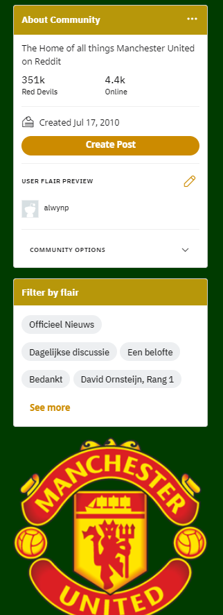

Usability Assessment
Visibility of system status
Web design should always keep users informed with appropriate feedback within a reasonable amount of time. An important part of website design is information. When a user interacts with a part of a website they should be informed that the interaction was successful. However, Reddit fails to send this to the user. When a link is clicked there is no change of color, no sound, nothing. The user isn't informed if the interaction wasn't success which means that if the interaction takes a while to happen the user is unaware.
User Control and Freedom
Users often perform actions by mistake. They need a clear exit to leave the unwanted action. Reddit those have an exit button in the case that the user accidentally clicks into a post. However, the exit button is small and can be difficult to find.
Recoginiton Rather than Recall
The user should not have to remember information from one part of the interface to another. Reddit allows people own subreddits to customise thew page. This feature allows the owners to promote users ability to recognise elements. In my example, r/Reddevils, they clearly put their logo, tabs and subreddit info on the side while in a post. Some users may find it unusual to look at and may not be able to find what they are looking for.

Flexibility and Efficiency of User
Shortcuts may speed up the interaction for the user. A great example of how Reddit uses shortcuts is at the top of a post where a user can access the subreddit or the user's profile who posdted the post. One problem I had is that there is a lack of shortcuts and some shortcuts aren't clear and may be difficult to find
Aesthetic & Minimalist Design
Interfaces should not contain information which is irrelevant or rarely needed. As I stated earlier, subreddits are mostly designed by owners of the subreddits. This allows a fellow user to make a nice and simple display for users. It is easy to find information and filters reddits as seen on the sidebar. However, users make use sloppy designs and color schemes that make the interface displeasing to look at.
Error Prevention
Good error messages are important, but the best designs carefully prevent problems from occurring in the first place. Reddit luckily, due to it's simple design makes it quite difficult to run into errors. I have been using Reddit for an extended period while researching for this review and I haven't had a single error.
Help and Documentation
It may be necessary to provide documentation to help users. Due to Reddit's simple design and layout it isn't entirely necessary that Reddit have a help page. It is still needed for website to add a help system for users who are inexperienced with the site. However, as of typing this review I struggled to find the help page. I then managed to find the 'help center' which is only found when the user presed on their account the top left. I feel that the help center should be more accessible
Other Pages